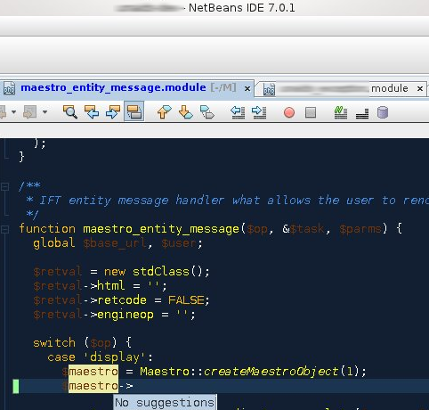
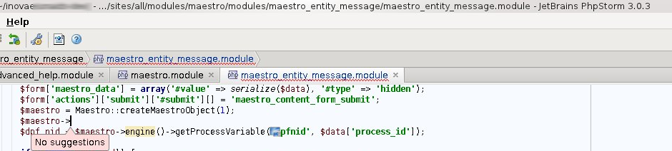
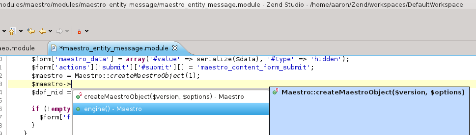
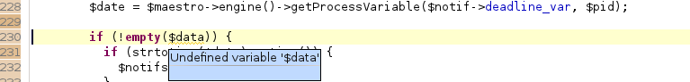

A cégnél többször szóba kerül, hogy melyik a legjobb PHP-s fejlesztőkörnyezet, York és Dénes a PhpStorm-ra esküszik és nem bírtam megállni, hogy késő este ne tegyem próbára a PHP-s kódkiegészítési képességeiket.
Megnéztem két esetet három IDE-vel. Az első eset Code Completion abban az esetben, amikor a Singleton patternt alkalmazzuk egy objektum létrehozásakor. A második eset pedig az IDE-k által használt "rossz" kód detektálása, amikor valamit elírtunk, pl. egy változónevet vagy nem létező függvénynevet akarunk hívni.
A Netbeans elhasal a Singleton patternes kiegészítésen:

Ugyanígy a PhpStorm is:

A ZendStudio 9.0 rájön, hogy milyen osztályból térünk vissza egy példánnyal:

Az ellenőrzéseket tekintve adott volt egy fájl, amiben egy változó nem volt definiálva. A NetBeans és a Zend Studio 9.0 megtalálta, a PhpStorm nem. [ Utólagos kiegészítés: a PhpStorm nem veszi nem definiáltnak a változót, ha empty()-vel tesztelem, nem hiszem, hogy ez kényelmes alapbeállítás lenne, igazából nem tudom, hogy ezen lehet-e módosítani. ] A NetBeans ráadásul még több hamis találatot is adott. Alább a Zend Studio helyes találata látható:

Nekem úgy tűnik, hogy a PHP-t még mindig a Zend IDE-je ismeri a legjobban. De azt el kell ismernem, hogy a PhpStorm felülete intuitívabb és a sebessége veri az Eclipse alapú Zend alkalmazásét. Nem is olyan egyszerű dönteni. Viszont a ZCE vizsga mellé adtak ingyen licencet, szóval árban az esetemben a Zend Studio a NetBeans-szel egy szinten van.
Mielőtt még elmentettem volna ezt a node-ot, gyorsan megnéztem a Javascriptet és mindenféle konfigurálás nélkül a Zend Studio nem tudott mit kezdeni a Drupal 7-es stílusú JS fájlokon belüli JQuery kiegészítéssel, a PhpStorm pedig hibátlanul hozta (NetBeans is). Az eredményhirdetés elmarad, feladom :)
Kiegészítés:
A kommentbeli kérésnek megfelelően kipróbáltam a Komodo IDE 7.0-t is. Érdekes, hogy nem ismeri fel a Singletonból visszatérő osztályt, listát nem kapunk így, viszont a kódkiegészítése rugalmas, tehát ha tudjuk, hogy kb. mit akarunk írni, akkor készségesen kiegészíti nekünk (nyilván a projektbeli összes előforduló lehetőségnek megfelelően).
- A hozzászóláshoz regisztráció és bejelentkezés szükséges
Esetleg a Komodo IDE-t ki
Esetleg a Komodo IDE-t ki lehetett volna meg probalni.
LOL :D
LOL :D
A nem definiált változós rész
A nem definiált változós rész lenne a lol? Kiegészítettem a magyarázattal, továbbra is fenntartom, hogy furcsán viselkedik alaphelyzetben a phpstorm.
PHPSTORM
Hát nem tudom hogy tesztelted a phpstorm-ot, de alapból fel ismeri a nem definiált változókat, szép hullámos pirossal alá is húzza.
Ráadásul a sigleton pattern-nél is működik rendesen a kódkiegészítés, annyi a "trükkje" hogy rendesen meg kell adni phpdoc-ban, hogy milyen osztály a függvény visszatérési értéke. Ráadásul a phpdoc commentet amúgy is érdemes megírni.
A változón én is
A változón én is csodálkoztam, hogy miért nem ismerte fel, hogy nem definiált. A beállításokat leellenőriztem, be volt kapcsolva a nem definiált változók figyelése. Most kipróbáltam, beírtam egy triviálisan nem létező változót, azt aláhúzta. Rájöttem a logikájára, valamiért úgy gondolja, hogy az empty()-n belül nem veszi nem definiáltnak, nem gondolom, hogy ez egy jó alapbeállítás lenne. Phpdocból elhiszem, hogy tudja, de ugye nem feltétlen a saját kódját használja az ember, szóval szerintem előny, ha nem az esetlegesen nem frissített dokumentációra támaszkodva tudja csak megtenni.